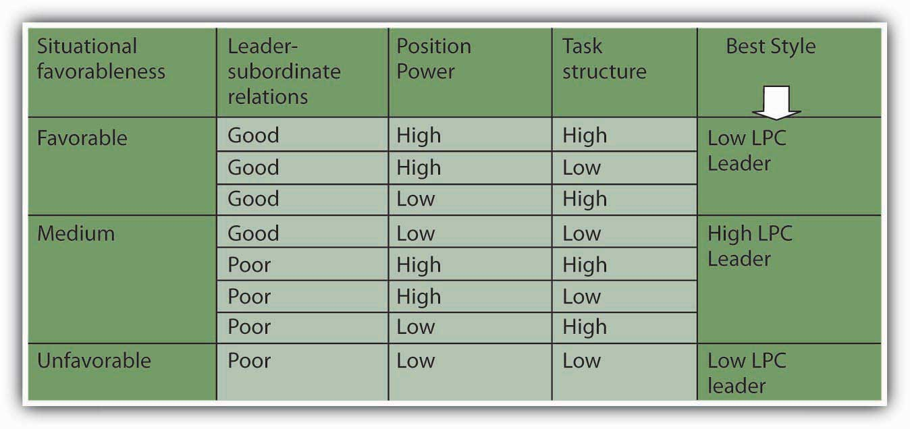
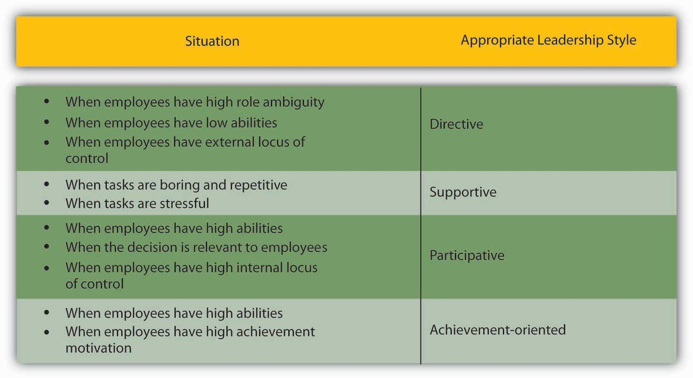
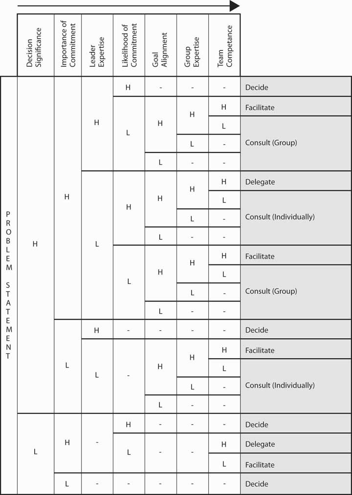

What is the best leadership style? By now, you must have realized that this may not the right question to ask. Instead, a better question might be: under which conditions are different leadership styles more effective? After the disappointing results of trait and behavioral approaches, several scholars developed leadership theories that specifically incorporated the role of the environment. Researchers started following a contingency approach to leadership—rather than trying to identify traits or behaviors that would be effective under all conditions, the attention moved toward specifying the situations under which different styles would be effective.
The earliest and one of the most influential contingency theories was developed by Frederick Fiedler.Fiedler, F. (1967). A theory of leadership effectiveness, New York: McGraw-Hill; Fiedler, F. E. (1964). A contingency model of leader effectiveness. In L. Berkowitz (ed.), Advances in experimental social psychology (Vol. 1, 149–190). New York: Academic Press. According to the theory, a leader’s style is measured by a scale called Least Preferred Coworker (LPC) scale. People who are filling out this survey are asked to think of a person who is their least preferred coworker. Then, they rate this person in terms of how friendly, nice, and cooperative this person is. Imagine someone you did not enjoy working with. Can you describe this person in positive terms? In other words, if you can say that the person you hated working with was still a nice person, you would have a high LPC score. This means that you have a people-oriented personality and you can separate your liking of a person from your ability to work with that person. However, if you think that the person you hated working with was also someone you did not like on a personal level, you would have a low LPC score. To you, being unable to work with someone would mean that you also dislike that person. In other words, you are a task-oriented person.
According to Fiedler’s theory, different people can be effective in different situations. The LPC score is akin to a personality trait and is not likely to change. Instead, placing the right people in the right situation or changing the situation is important to increase a leader’s effectiveness. The theory predicts that in “favorable” and “unfavorable” situations, a low LPC leader—one who has feelings of dislike for coworkers who are difficult to work with—would be successful. When situational favorableness is medium, a high LPC leader—one who is able to personally like coworkers who are difficult to work with—is more likely to succeed.
How does Fiedler determine whether a situation is favorable, medium, or unfavorable? There are three conditions creating situational favorableness: (1) leader-subordinate relations, (2) position power, and (3) task structure. If the leader has a good relationship with most people, has high position power, and the task is structured, the situation is very favorable. When the leader has low-quality relations with employees, has low position power, and the task is relatively unstructured, the situation is very unfavorable.
Research partially supports the predictions of Fiedler’s contingency theory.Peters, L. H., Hartke, D. D., & Pohlmann, J. T. (1985). Fiedler’s contingency theory of leadership: An application of the meta-analysis procedures of Schmidt and Hunter. Psychological Buletin, 97, 274–285; Strube, M. J., & Garcia, J. E. (1981). A meta-analytic investigation of Fiedler’s contingency model of leadership effectiveness. Psychological Buletin, 90, 307–321; Vecchio, R. P. (1983). Assessing the validity of Fiedler’s contingency model of leadership effectiveness: A closer look at Strube and Garcia. Psychological Buletin, 93, 404–408. Specifically, there is more support for the theory’s predictions about when low LPC leadership should be used, but the part about when high LPC leadership would be more effective received less support. Even though the theory was not supported in its entirety, it is a useful framework to think about when task- versus people-oriented leadership may be more effective. Moreover, the theory is important because of its explicit recognition of the importance of the context of leadership.
Figure 10.10 Situational Favorableness
Source: Based on information in Fiedler, F. (1967). A Theory of Leadership Effectiveness. New York: McGraw-Hill; Fiedler, F. E. (1964). A contingency model of leader effectiveness. In L. Berkowitz (Ed.), Advances in Experimental Social Psychology (Vol. 1, pp. 149–190). New York: Academic Press.
Another contingency approach to leadership is Kenneth Blanchard and Paul Hersey’s Situational Leadership Theory (SLT) which argues that leaders must use different leadership styles depending on their followers’ development level.Hersey, P.H., Blanchard, K.H., ' Johnson, D.E. (2007). Management of Organizational Behavior: Leadership human resources. Upper Saddle River, NJ: Prentice Hall. According to this model, employee readiness (defined as a combination of their competence and commitment levels) is the key factor determining the proper leadership style. This approach has been highly popular with 14 million managers across 42 countries undergoing SLT training and 70% of Fortune 500 companies employing its use.http://www.situational.com/Views/SituationalLeadership/RightHereRightNow.aspx
The model summarizes the level of directive and supportive behaviors that leaders may exhibit. The model argues that to be effective, leaders must use the right style of behaviors at the right time in each employee’s development. It is recognized that followers are key to a leader’s success. Employees who are at the earliest stages of developing are seen as being highly committed but with low competence for the tasks. Thus, leaders should be highly directive and less supportive. As the employee becomes more competent, the leader should engage in more coaching behaviors. Supportive behaviors are recommended once the employee is at moderate to high levels of competence. And finally, delegating is the recommended approach for leaders dealing with employees who are both highly committed and highly competent. While the SLT is popular with managers, relatively easy to understand and use, and has endured for decades, research has been mixed in its support of the basic assumptions of the model.Blank, W., Green, S.G., ' Weitzel, J.R. (1990). A test of the situational leadership theory. Personnel Psychology, 43, 579–597; Graeff, C. L. (1983). The situational leadership theory: A critical review. Academy of Management Review, 8, 285–291; Fernandez, C.F., ' Vecchio, R.P. (2002). Situational leadership theory revisited: A test of an across-jobs perspective. Leadership Quarterly, 8, 67–84. Therefore, while it can be a useful way to think about matching behaviors to situations, overreliance on this model, at the exclusion of other models, is premature.
Table 10.1
| Follower Readiness Level | Competence (Low) | Competence (Low) | Competence (Moderate to High) | Competence (High) |
| Commitment (High) | Commitment (Low) | Commitment (Variable) | Commitment (High) | |
| Recommended Leader Style | Directing Behavior | Coaching Behavior | Supporting Behavior | Delegating Behavior |
Situational Leadership Theory helps leaders match their style to follower readiness levels.
Robert House’s path-goal theory of leadership is based on the expectancy theory of motivation.House, R. J. (1971). A path goal theory of leader effectiveness. Administrative Science Quarterly, 16(3), 321–338. Expectancy theory of motivation suggests that employees are motivated when they believe—or expect—that (1) their effort will lead to high performance, (2) their high performance will be rewarded, and (3) the rewards they will receive are valuable to them. According to the path-goal theory of leadership, the leader’s main job is to make sure that all three of these conditions exist. Thus, leaders will create satisfied and high-performing employees by making sure that employee effort leads to performance, and their performance is rewarded. The leader removes roadblocks along the way and creates an environment that subordinates find motivational.
The theory also makes specific predictions about what type of leader behavior will be effective under which circumstances.House, R. J. (1996). Path-goal theory of leadership: Lessons, legacy, and a reformulated theory. Leadership Quarterly, 7, 323–352; House, R. J., & Mitchell, T. R. (1974). Path-goal theory of leadership. Journal of Contemporary Business, 3, 81–97. The theory identifies four leadership styles. Each of these styles can be effective, depending on the characteristics of employees (such as their ability level, preferences, locus of control, achievement motivation) and characteristics of the work environment (such as the level of role ambiguity, the degree of stress present in the environment, the degree to which the tasks are unpleasant).
Path-goal theory of leadershipTheory stating that a leader’s main job is to motivate employees with the beliefs that (1) their effort will lead to high performance, (2) their high performance will be rewarded, and (3) the rewards they will receive are valuable to them. identifies four styles leaders may adopt. Directive leadersThose leaders who provide specific directions to their employees. provide specific directions to their employees. They lead employees by clarifying role expectations, setting schedules, and making sure that employees know what to do on a given workday. The theory predicts that the directive style will work well when employees are experiencing role ambiguity on the job. If people are unclear about how to go about doing their jobs, giving them specific directions will motivate them. However, if employees already have role clarity, and if they are performing boring, routine, and highly structured jobs, giving them direction does not help. In fact, it may hurt them by creating an even more restricting atmosphere. Directive leadership is also thought to be less effective when employees have high levels of ability. When managing professional employees with high levels of expertise and job-specific knowledge, telling them what to do may create a low empowerment environment, which impairs motivation.
Supportive leadersThose leaders who provide emotional support to employees. provide emotional support to employees. They treat employees well, care about them on a personal level, and are encouraging. Supportive leadership is predicted to be effective when employees are under a lot of stress or when they are performing boring and repetitive jobs. When employees know exactly how to perform their jobs but their jobs are unpleasant, supportive leadership may also be effective.
Participative leadersThose leaders who make sure that employees are involved in making important decisions. make sure that employees are involved in making important decisions. Participative leadership may be more effective when employees have high levels of ability and when the decisions to be made are personally relevant to them. For employees who have a high internal locus of control, or the belief that they can control their own destinies, participative leadership gives employees a way of indirectly controlling organizational decisions, which will be appreciated.
Achievement-oriented leadersThose leaders who set goals for employees and encourage them to reach their goals. set goals for employees and encourage them to reach their goals. Their style challenges employees and focuses their attention on work-related goals. This style is likely to be effective when employees have both high levels of ability and high levels of achievement motivation.
Figure 10.12 Predictions of Path-Goal Theory
Source: On the basis of information presented in House, R. J. (1996). Path-goal theory of leadership: Lessons, legacy, and a reformulated theory. Leadership Quarterly, 7, 323–352; House, R. J., & Mitchell, T. R. (1974). Path-goal theory of leadership. Journal of Contemporary Business, 3, 81–97.
The path-goal theory of leadership has received partial but encouraging levels of support from researchers. Because the theory is highly complicated, it has not been fully and adequately tested.House, R. J., & Aditya, R. N. (1997). The social scientific study of leadership: Quo Vadis? Journal of Management, 23, 409–473; Stinson, J. E., & Johnson, T. W. (1975). The path-goal theory of leadership: A partial test and suggested refinement. Academy of Management Journal, 18, 242–252; Wofford, J. C., & Liska, L. Z. (1993). Path-goal theories of leadership: A meta-analysis. Journal of Management, 19, 857–876. The theory’s biggest contribution may be that it highlights the importance of a leader’s ability to change styles, depending on the circumstances. Unlike Fiedler’s contingency theory, in which the leader’s style is assumed to be fixed and only the environment can be changed, House’s path-goal theory underlines the importance of varying one’s style, depending on the situation.
Yale School of Management professor Victor Vroom and his colleagues Philip Yetton and Arthur Jago developed a decision-making tool to help leaders determine how much involvement they should seek when making decisions.Vroom, V. H. (2000). Leadership and the decision making process. Organizational Dynamics, 68, 82–94; Vroom, V. H., & Yetton, P. W. (1973). Leadership and Decision-Making. Pittsburgh: University of Pittsburgh Press; Jago, A., & Vroom, V. H. (1980). An evaluation of two alternatives to the Vroom/Yetton Normative Model. Academy of Management Journal, 23, 347–355; Vroom, V. H., & Jago, A. G. 1988. The new leadership: Managing participation in organizations. Englewood Cliffs, NJ: Prentice Hall. The model starts by having leaders answer several key questions and working their way through a funnel based on their responses.
Let’s try it. Imagine that you want to help your employees lower their stress so that you can minimize employee absenteeism. There are a number of approaches you could take to reduce employee stress, such as offering gym memberships, providing employee assistance programs, establishing a nap room, and so forth. Let’s refer to the model and start with the first question. As you answer each question as high (H) or low (L), follow the corresponding path down the funnel.
Based on the answers to the questions we gave, the normative approach recommends consulting employees as a group. In other words, the leader may make the decision alone after gathering information from employees and is not advised to delegate the decision to the team or to make the decision alone with no input from the team members.
Figure 10.13
Vroom and Yetton’s leadership decision tree shows leaders which styles will be most effective in different situations.
Used by permission from Victor H. Vroom.
Vroom and Yetton’s model is somewhat complicated, but research results support the validity of the model. On average, leaders using the style recommended by the model tend to make more effective decisions compared with leaders using a style not recommended by the model.Vroom, V. H., & Jago, G. (1978). On the validity of the Vroom Yetton model. Journal of Applied Psychology, 63, 151–162.
The contingency approaches to leadership describe the role the situation would play in choosing the most effective leadership style. Fiedler’s contingency theory argued that task-oriented leaders would be most effective when the situation was the most and the least favorable, whereas relationship-oriented leaders would be effective when situational favorableness was moderate. Situational Leadership Theory takes the maturity level of followers into account. House’s path-goal theory states that the leader’s job is to ensure that employees view their effort as leading to performance and increase the belief that performance would be rewarded. For this purpose, leaders would use directive, supportive, participative, and achievement-oriented leadership styles, depending on what employees needed to feel motivated. Vroom and Yetton’s normative decision model is a guide leaders can use to decide how participative they should be given decision environment characteristics.